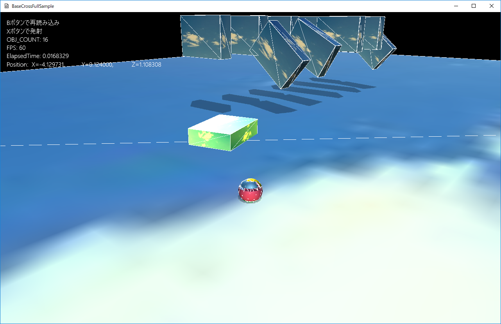

７．物理世界
７０３．ジョイント
このサンプルはFullSample703というディレクトリに含まれます。
BaseCrossDx11.slnというソリューションを開くとDx11版が起動します。
リビルドして実行すると以下の画面が出てきます。

図0703a
Xボタンで球を発射します。それを、手前側のボックスに当てると選択できます。選択したうえで、Yボタンを動かすと選択されたボックスが動きます。以下の画面です。

図0703b
選択できるのは、６つのボックスだけです。また、それぞれの動きもジョイントに制約された動きとなります。
ジョイントとはオブジェクト同士を結びつける結び目みたいなものです。
向かって左からボールジョイント、球関節ジョイント、蝶番（ちょうつがい）ジョイント、スライドジョイント、固定ジョイント、ユニバーサルジョイントです。それぞれの動きは各自確認してください。
連続してXボタンの球を同じオブジェクトに当てると、そのジョイントは切断されます。以下、切断された状態です。

図0703c
切断された状態では、選択されているオブジェクトは、プレイヤーの真上に向かって移動するようになります。
ジョイントの利用範囲
ジョイントは一見目立たないオブジェクトですが、考えてみるとかなり利用範囲が広いのがわかります。例えばステージの出入り口をリアルに表現しようと思えば蝶番（ちょうつがい）ジョイントが使えるのがわかりますし、壁に突き出たボタンのようなオブジェクトは、スライダージョイントが使えます。
また固定ジョイントで複数のオブジェクトを組み合わせて作成しておき、それが破壊されたときにジョイントを切断することで、バラバラになったオブジェクトを表現できます。
さらには球関節ジョイントを駆使することでラグドールと言われる人形を作ることができます。ラグドールは、実際のゲームでも攻撃を受けた瞬間のアニメーションや死んだ敵などを表現する場合に使用されます。
それらの応用については、機会があればサンプル化するとして、今項では、ジョイントの生成方法を述べたシンプルなサンプルとなっています。
ジョイントオブジェクト
それでは具体的なコードの説明にはいります。まずジョイントを表現するためにBaseCrossではジョイントクラスをいくつか用意しています。これらクラスはPsJointクラスを親クラスとした派生クラスです。PsBallJointクラスはボールジョイントです。PsSwingTwistJointは球関節ジョイントです。このようにしてPsHingeJoint（ちょうつがい）、PsSliderJoint（スライダー）、PsFixJoint（固定）、PsUniversalJoint（ユニバーサル）の各ジョイントがあります。
またジョイントオブジェクトはゲームオブジェクトでもなければコンポーネントでもありません。カメラやライトに近い、独立したオブジェクトです。これは複数（２つの）ゲームオブジェクトの橋渡し的な存在なのでこのような設計になってます。
ですのでジョイントオブジェクトを実装するには保持するオブジェクトが必要になります。例えばステージはそのような役割を担えますが、このサンプルではジョイントマネージャというゲームオブジェクトを作成し、そこに持たせます。
以下がジョイントマネージャ（PsJointManagerクラス）の宣言です。Character.hにあります。
class PsJointManager : public GameObject {
shared_ptr<PsBallJoint> m_PsBallJoint;
shared_ptr<PsSwingTwistJoint> m_PsSwingTwistJoint;
shared_ptr<PsHingeJoint> m_PsHingeJoint;
shared_ptr<PsSliderJoint> m_PsSliderJoint;
shared_ptr<PsFixJoint> m_PsFixJoint;
shared_ptr<PsUniversalJoint> m_PsUniversalJoint;
void CreateBallJoint();
void CreateSwingTwistJoint();
void CreateHingeJoint();
void CreateSliderJoint();
void CreateFixJoint();
void CreateUniversalJoint();
public:
//構築と破棄
PsJointManager(const shared_ptr<Stage>& StagePtr);
virtual ~PsJointManager();
//初期化
virtual void OnCreate() override;
};
ジョイントによって結び付けられるオブジェクト
さて、ジョイントを作成する前にジョイントによって結び付けられるオブジェクトを作成しなければなりません。それはPsBrickクラスです。以下がOnCreate()関数です。
void PsBrick::OnCreate() {
auto PtrTransform = GetComponent<Transform>();
PtrTransform->SetScale(m_Scale);
PtrTransform->SetQuaternion(m_Qt);
PtrTransform->SetPosition(m_Position);
//影をつける
auto ShadowPtr = AddComponent<Shadowmap>();
ShadowPtr->SetMeshResource(L"DEFAULT_CUBE");
auto PtrDraw = AddComponent<BcPNTStaticDraw>();
PtrDraw->SetFogEnabled(true);
PtrDraw->SetMeshResource(L"DEFAULT_CUBE");
PtrDraw->SetOwnShadowActive(true);
PtrDraw->SetTextureResource(L"SKY_TX");
//物理計算ボックス
PsBoxParam param;
//DEFAULT_CUBEのスケーリングは各辺基準なので、ハーフサイズにする
param.m_HalfSize = m_Scale * 0.5f;
param.m_Mass = m_Mass;
//慣性テンソルの計算
param.m_Inertia = BasePhysics::CalcInertiaBox(param.m_HalfSize, param.m_Mass);
if (m_IsFixed) {
param.m_MotionType = PsMotionType::MotionTypeFixed;
}
else {
param.m_MotionType = PsMotionType::MotionTypeActive;
}
param.m_Quat = m_Qt;
param.m_Pos = m_Position;
auto PsPtr = AddComponent<PsBoxBody>(param);
if (m_IsFixed) {
PsPtr->SetContactFilterSelf(1);
PsPtr->SetContactFilterTarget(1);
}
else {
PsPtr->SetContactFilterSelf(2);
PsPtr->SetContactFilterTarget(2);
}
//ワーアフレームの表示
PsPtr->SetDrawActive(true);
//ステートマシンの構築
m_StateMachine.reset(new StateMachine<PsBrick>(GetThis<PsBrick>()));
//最初のステートをPsBrickDefaultStateに設定
m_StateMachine->ChangeState(PsBrickDefaultState::Instance());
}
また
if (m_IsFixed) {
PsPtr->SetContactFilterSelf(1);
PsPtr->SetContactFilterTarget(1);
}
else {
PsPtr->SetContactFilterSelf(2);
PsPtr->SetContactFilterTarget(2);
}
衝突判定のフィルターとは、以下に実際に判定しているところのコード(ライブラリ中、抜粋）を紹介しますと
if( (shapeA.getContactFilterSelf()&shapeB.getContactFilterTarget()) &&
(shapeA.getContactFilterTarget()&shapeB.getContactFilterSelf()) ) {
//判定を行う
}
shapeAとshapeBは判定を行う形状です。このアルゴリズムを要約すると
１、shapeAのFilterSelfとshapeBのFilterTargetのANDが真 ２、shapeBのFilterSelfとshapeAのFilterTargetのANDが真 ３、１と２の両方を満たしてる場合、判定する
支えと動くほうの判定は支えのFilterSelf（1）と動くほうのFilterTarget(2)のANDは真ではないので判定は行いません。
一方動くほう同士は動くほうAのFilterSelf（2）と動くほうBのFilterTarget(2)のANDは真なので判定は行います。ですので、ジョイントが切り離されたオブジェクト同士は衝突判定が行われます。
支え同士も同様に判定しますが、支えはFixになっているので動くことはないので、お互いが衝突することはありません。
また衝突判定のフィルターはデフォルトがFilterSelfとFilterTargetが両方、0xFFFFFFFFとなっているので、プレイヤーとは支えも動くほうもどちらも判定を行います。
このように一方のFilterSelfと、もう一方のFilterTargetのANDをもとに判定するかどうかを決めているので、複数のオブジェクト同士の判定を制御することが可能になります。
このように定義されたオブジェクトは、GameStageで以下のように構築されます。
void GameStage::CreatePhysicsObjects() {
//下の台
AddGameObject<FixedPsBox>(Vec3(30.0f, 1.0f, 30.0f), Quat(), Vec3(0.0f, -0.5f, 0.0f));
//ボールジョイント用
auto BrickPtr
= AddGameObject<PsBrick>(Vec3(0.25f, 0.7f, 1.0f), Quat(), Vec3(-2.0f, 1.5f, 4.0f), 5.0f, true);
SetSharedGameObject(L"Brick01", BrickPtr);
BrickPtr
= AddGameObject<PsBrick>(Vec3(0.25f, 0.7f, 1.0f), Quat(), Vec3(-2.0f, 1.5f, 3.0f), 5.0f, false);
SetSharedGameObject(L"Brick02", BrickPtr);
//球関節ジョイント用
BrickPtr
= AddGameObject<PsBrick>(Vec3(0.25f, 0.7f, 1.0f), Quat(), Vec3(-1.0f, 1.5f, 4.0f), 5.0f, true);
SetSharedGameObject(L"Brick03", BrickPtr);
BrickPtr
= AddGameObject<PsBrick>(Vec3(0.25f, 0.7f, 1.0f), Quat(), Vec3(-1.0f, 1.5f, 3.0f), 5.0f, false);
SetSharedGameObject(L"Brick04", BrickPtr);
//蝶番ジョイント用
BrickPtr
= AddGameObject<PsBrick>(Vec3(0.25f, 0.7f, 1.0f), Quat(), Vec3(0.0f, 1.5f, 4.0f),5.0f,true);
SetSharedGameObject(L"Brick05", BrickPtr);
BrickPtr
= AddGameObject<PsBrick>(Vec3(0.25f, 0.7f, 1.0f), Quat(), Vec3(0.0f, 1.5f, 3.0f), 5.0f, false);
SetSharedGameObject(L"Brick06", BrickPtr);
//スライダージョイント用
BrickPtr
= AddGameObject<PsBrick>(Vec3(0.25f, 0.7f, 1.0f), Quat(), Vec3(1.0f, 1.5f, 4.0f), 5.0f, true);
SetSharedGameObject(L"Brick07", BrickPtr);
BrickPtr
= AddGameObject<PsBrick>(Vec3(0.25f, 0.7f, 1.0f), Quat(), Vec3(1.0f, 1.5f, 3.0f), 5.0f, false);
SetSharedGameObject(L"Brick08", BrickPtr);
//固定ジョイント用
BrickPtr
= AddGameObject<PsBrick>(Vec3(0.25f, 0.7f, 1.0f), Quat(), Vec3(2.0f, 1.5f, 4.0f), 5.0f, true);
SetSharedGameObject(L"Brick09", BrickPtr);
BrickPtr
= AddGameObject<PsBrick>(Vec3(0.25f, 0.7f, 1.0f), Quat(), Vec3(2.0f, 1.5f, 3.0f), 5.0f, false);
SetSharedGameObject(L"Brick10", BrickPtr);
//ユニバーサルジョイント用
BrickPtr
= AddGameObject<PsBrick>(Vec3(0.25f, 0.7f, 1.0f), Quat(), Vec3(3.0f, 1.5f, 4.0f), 5.0f, true);
SetSharedGameObject(L"Brick11", BrickPtr);
BrickPtr
= AddGameObject<PsBrick>(Vec3(0.25f, 0.7f, 1.0f), Quat(), Vec3(3.0f, 1.5f, 3.0f), 5.0f, false);
SetSharedGameObject(L"Brick12", BrickPtr);
//ジョイントマネージャの作成
auto MngPtr = AddGameObject<PsJointManager>();
SetSharedGameObject(L"PsJointManager", MngPtr);
}
これらは、最後に作成しているジョイントマネージャ（PsJointManagerクラス）で参照します。
ジョイントの作成
このように、12個のオブジェクトを作成しましたら、最後にPsJointManagerクラスを構築します。以下はPsJointManager::OnCreate()関数です。Character.cppにあります。
void PsJointManager::OnCreate() {
CreateBallJoint();
CreateSwingTwistJoint();
CreateHingeJoint();
CreateSliderJoint();
CreateFixJoint();
CreateUniversalJoint();
}
個別にはここでは説明しませんが、1つだけ例としてちょうつがいジョイントを説明します。CreateHingeJoint()関数で作成します。
void PsJointManager::CreateHingeJoint() {
auto ObjA = GetStage()->GetSharedGameObject<PsBrick>(L"Brick05");
auto CompA = ObjA->GetComponent<PsBoxBody>();
auto ObjB = GetStage()->GetSharedGameObject<PsBrick>(L"Brick06");
auto CompB = ObjB->GetComponent<PsBoxBody>();
PsHingeJointParam param;
param.m_AnchorPoint = (CompA->GetPosition() + CompB->GetPosition())*0.5f;
param.m_IndexA = CompA->GetIndex();
param.m_IndexB = CompB->GetIndex();
param.m_Axis = Vec3(1.0f, 0.0f, 0.0f);
param.m_LowerAngle = -0.5f;
param.m_UpperAngle = 0.7f;
m_PsHingeJoint = GetStage()->GetBasePhysics().AddHingeJoint(param);
ObjA->SetJoint(m_PsHingeJoint);
ObjB->SetJoint(m_PsHingeJoint);
}
そのあと赤くなっているところのように、PsHingeJointParam構造体を初期化します。この構造体はちょうつがいを作成するための構造体で、各ジョイントのタイプごとに存在します。
m_AnchorPoint、m_IndexA、m_IndexBメンバは各ジョイント共通です。ほかのメンバは個別です。
m_Axisはちょうつがいの回転軸を設定します。m_LowerAngleは最小回転、m_UpperAngleは最大回転です。
パラメータの設定が終わったら
m_PsHingeJoint = GetStage()->GetBasePhysics().AddHingeJoint(param);